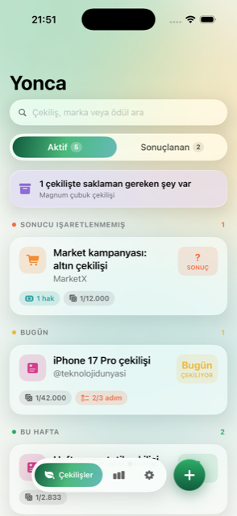
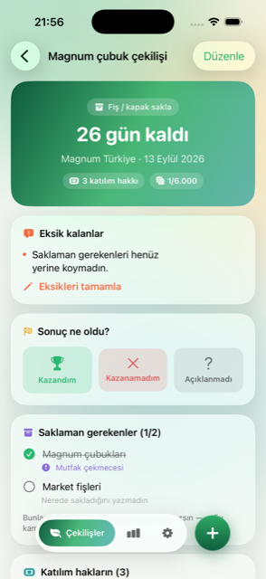
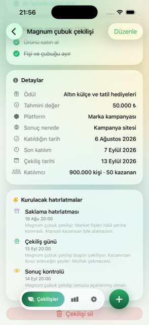
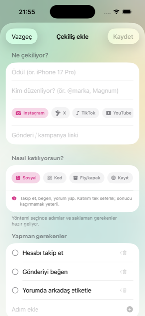
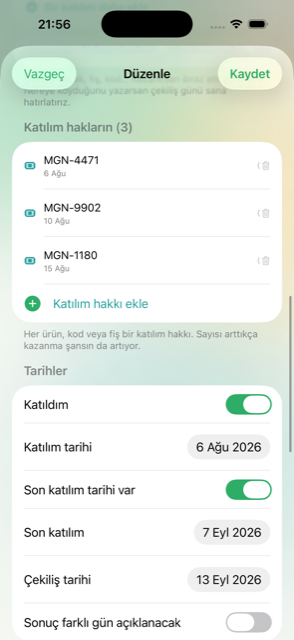
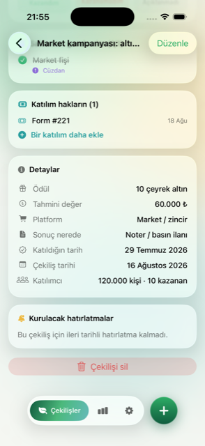
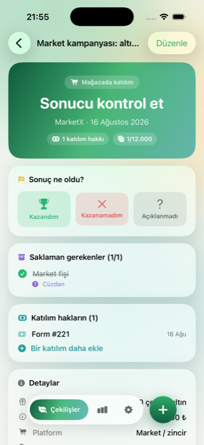
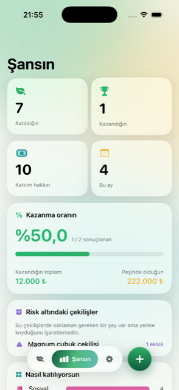
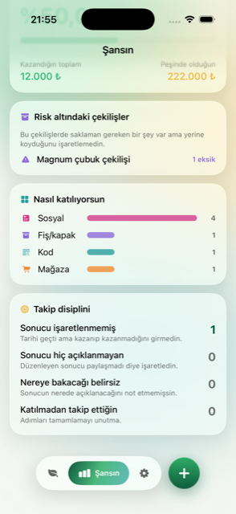
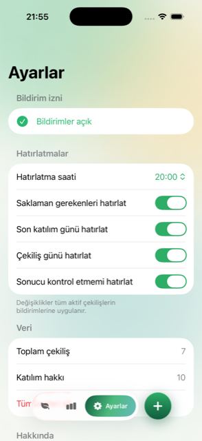

Instagram'da yorum yaparsın, market kampanyası için fiş biriktirirsin, kapak altındaki kodu gönderirsin — sonra unutursun. Yonca hem sonuç gününü hem de saklaman gerekenleri hatırlar.



Tarihe göre değil, ne kadar acil olduğuna göre sıralanır. Sonucunu hâlâ işaretlemediklerin en üste çıkar; çünkü unutulan asıl şey onlardır.
Çekiliş uygulamaları tarihi hatırlatır. Asıl kaybettiren şey tarih değil: Magnum çubuğunu, kapağı, market fişini, ürün kodunu saklaman gerekiyor. İbraz edemezsen ödülü alamazsın.
Tek bir "çekiliş günü geldi" bildirimi yeterli değil. Kaçırdığın anlar farklı farklı, o yüzden hatırlatmalar da öyle.
Her çekiliş aynı değil. Instagram çekilişinde tek mesele tarih; fiş kampanyasında asıl mesele ne sakladığın. Yöntemi seçtiğinde form kendini ona göre kurar.

Kapak altı kampanyalarında bir kez katılmıyorsun. Her ürün yeni bir hak demek ve kazanma olasılığın buna göre değişiyor.


Sonuç günü geldiğinde tek yapman gereken işaretlemek. Üçüncü seçenek bilerek var: bazı çekilişler sonucu hiç açıklamaz ve bu da bir veri.

Kaç çekilişe katıldığını ve kaçını kazandığını zaman içinde görürsün. Ayrıca uygulamanın sana kızdığı yer burası: takip disiplini.


Dört hatırlatma türünü tek tek kapatabilirsin. Saatini de sen seçersin; değiştirdiğin an tüm aktif çekilişlerin bildirimleri yeniden kurulur.

Yonca'nın sunucusu yok. Hesap açman gerekmez ve uygulama internete hiçbir istek göndermez.
Çekilişlerin, kodların, fotoğrafların ve notların yalnızca cihazının içinde saklanır.
Kayıt olmazsın, e-posta vermezsin. Uygulamayı silersen her şey silinir.
Reklam, analitik ve üçüncü taraf SDK yok. İzleme izni (ATT) hiç sorulmaz.
Ekran görüntüsünden metin okuma Apple'ın Vision teknolojisiyle cihazında yapılır.
Çekilişi Yonca düzenlemez, kazananı seçmez. Sadece senin katıldıklarını hatırlamana yardım eder.